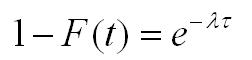
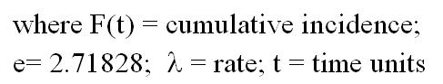
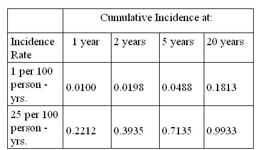
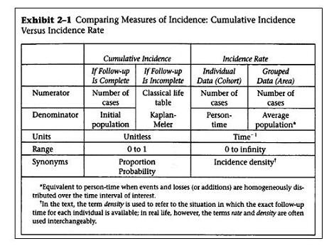

Rate and Cumulative Incidence
Lead Author(s): Jeff Martin, MD
Rate Reserved for Measuring Incidence
Rate should be reserved for measuring incidence.
- In general a rate is a change in one measure with respect to change in a 2nd.
The word rate should be avoided when existing diagnoses at one point in time are what was measured.
- Here we are pointing out that rate should be restricted to use as a term for incidence but not prevalence.
There is a further distinction between a person-time incidence rate and cumulative incidence.
- Some epidemiologists also call cumulative incidence a rate, but that is incorrect. Both are ways to measure incidence.
Rate and Cumulative Incidence
Rate can be thought of as how likely an event is to happen at any moment in time
Cumulative incidence is the result of applying that rate to a defined population for a specified period of time
A person-time rate is calculated by using data from a time period, but the rate is assumed constant during that period
- (i.e., at any moment in time during the period the rate is the same)
It may help in understanding the difference between an incidence rate and cumulative incidence to think of the rate as how likely an event, such as death or a disease diagnosis, is to occur at any given moment in time (a kind of instantaneous risk) and to think of the cumulative incidence as the result of applying that instantaneous rate to a given number of persons for a longer period of time.
- The longer the time period, the more the cumulative incidence will differ from the rate.
- The higher the rate the more quickly this difference appears.
So the rate can be thought of as the most fundamental measure of disease incidence, something captured rather metaphorically by older descriptions of a rate as the force of morbidity or the force of mortality.
The cumulative incidence can only be constant as long as no new event occurs, but every time an event occurs, the cumulative incidence has to increase.
- Remember, cumulative incidence is among a closed population of persons for a specified time period.
Relationship Between Incidence Rate and Cumulative Incidence
If time period is short, incidence rate and cumulative incidence will be close.
If rate is low, incidence rate and cumulative incidence will be close (unless study period is long).
Since cumulative incidence is the result of applying a rate to a closed, finite number of persons, the number of persons at risk decreases over time as they are removed by experiencing the event. Thus applying the same rate over a long period of time to a closed cohort of persons will result in steadily decreasing numbers of new events and a greater and greater divergence between the rate and the cumulative incidence. For a very short time there will be little difference between the rate and the cumulative incidence.
A constant rate produces an exponential cumulative incidence (or survival) distribution
If you know the instantaneous incidence rate, you can derive the cumulative incidence/survival function or vice-versa


There is a formal mathematical relationship between rate and cumulative incidence. It is represented by this formula for a constant rate. For rates that are changing over time, there are other mathematical formulas that express the relationship. Rates that increase or decrease can be handled by a family of mathematical distributions known as gamma distributions.
Table of Incidence Rate vs Cumulative Incidence
Applying the formula above, gives the values in this table for cumulative incidence for a low and a high incidence rate over 4 time periods.

NOTE: At one-year neither cumulative incidence differs much from the rate (when the rate is expressed per 100 person-years)
- The high rate rapidly gives a quite different cumulative incidence while the low rate takes longer to diverge.
Example: Cumulative Incidence and Rate
The mortality rate in the U.S. population in 2001 was 855 per 100,000 person-years (or 0.855 per 100 person-years)
- If everyone alive at the beginning of the year were followed for 5 years,
- The cumulative incidence of death (if the rate held constant) would be 4.2% at 5 years;
- The cumulative incidence of death (if the rate held constant) would be 8.2% at 10 years.
If the rate remains constant, applying that rate to a given number of persons for a given time period produces a cumulative incidence that follows an exponential distribution.
- For a short time period, the rate (expressed per 100 person-years) and the cumulative incidence will be very close, but not identical.
- For a 1 year period mortality rate of 0.855 per 100 person-years produces a cumulative incidence = 0.851%, very slightly different from the rate.
- But if the U.S. mortality rate of 0.855 per 100 person-years applies to everyone alive at this moment and stays constant for five years, the cumulative incidence of mortality at five years would be 4.2%.
- At 10 years the cumulative incidence would be 8.2%, both quite different from the rate.
- And if the rate is high the cumulative incidence will differ significantly faster.
- A rate of 30 per 100 person-years gives a 1-year cumulative incidence of 25.9%.
Of course, in a closed cohort the mortality rate would increase over time as the cohort ages. This does not pose a problem. There are other mathematical formulas for dealing with an increasing rate.
Increasing rate would cause the cumulative incidence to increase faster.
Summary of Characteristics of Cumuative Incidence versus Incidence Time Rate
The following table from Szklo and Nieto summarizes the characteristics of cumulative indicidence versus incidence rate.

References
Szklo, M., & Nieto, F. (2007). Epidemiology: Beyond the Basics (2nd Edition ed.). Boston: Jones and Bartlett Publishers.